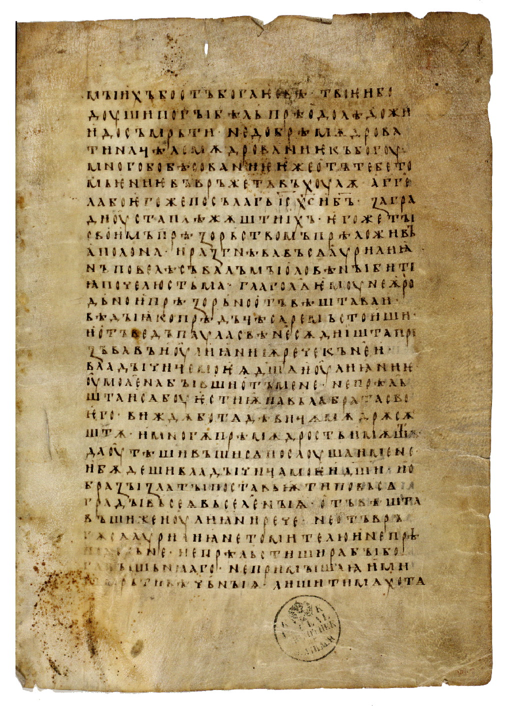
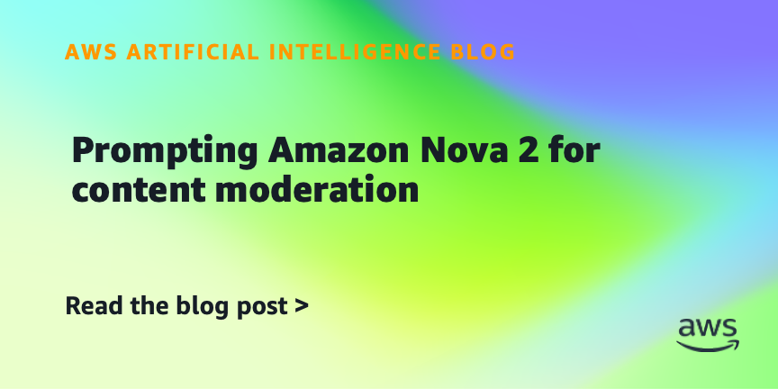
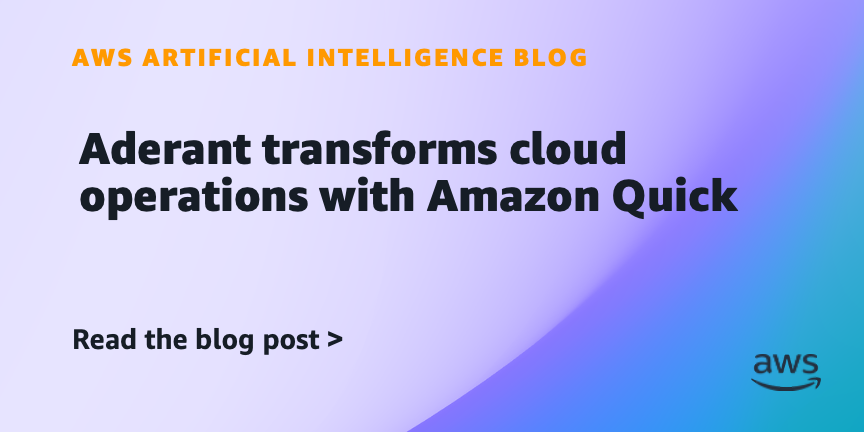
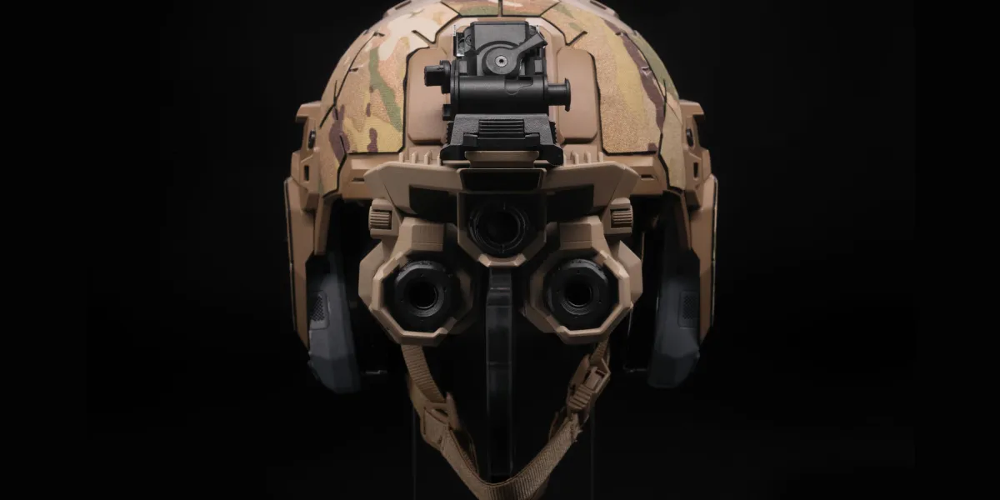

NVIDIA Vera CPU 交到顶级 AI 实验室
原文：Vera Arrives: NVIDIA’s First CPU Built for Agents Lands at Top AI LabsNVIDIA 的 Vera CPU 开始交付给顶级 AI 实验室，信号在于智能体基础设施不只拼 GPU，也开始拼 CPU 与整机协同。
Vera 不是给发布会撑场面的名字，它是在补智能体基础设施的另一半。
原文Codex先把今天的注意力拉住；Dell补上另一条线索。今天先看这些具体产品怎么动。
今天值得看的对象是Codex、Dell、OpenAI、合作：它们分别牵出合作、智能体能力、内容审核，重点不在声量，而在这些产品和评测会怎样改变具体使用路径。

OpenAI 与戴尔合作，把 Codex 带进混合和本地企业环境，重点是代码智能体开始进入更保守的企业部署场景。
NVIDIA 的 Vera CPU 开始交付给顶级 AI 实验室，信号在于智能体基础设施不只拼 GPU，也开始拼 CPU 与整机协同。

AWS Machine Learning Blog · businessAWS 用 Nova 2 做内容审核提示AWS 展示如何提示 Amazon Nova 2 做内容审核，重点是企业把模型能力落到安全审核、规则判断和工作流自动化里。

AWS Machine Learning Blog · businessAderant 用 Amazon Quick 改造云运维AWS 案例写到 Aderant 用 Amazon Quick 改造云运维，重点是企业开始把 AI 问答接进日常运维和内部知识流。

MIT Technology Review AI · businessAnduril 与 Meta 做军用智能眼镜MIT Technology Review 写到 Anduril 和 Meta 探索战争场景里的智能眼镜，重点是可穿戴 AI 正在进入高风险应用。
NVIDIA 的 Vera CPU 开始交付给顶级 AI 实验室，信号在于智能体基础设施不只拼 GPU，也开始拼 CPU 与整机协同。
Vera 不是给发布会撑场面的名字，它是在补智能体基础设施的另一半。
原文AWS 案例写到 Aderant 用 Amazon Quick 改造云运维，重点是企业开始把 AI 问答接进日常运维和内部知识流。
云运维这种地方没多少掌声，但 AI 能不能上班，往往先在这里露馅。
原文AWS 介绍在 Amazon Bedrock AgentCore 里构建代码型评估器，重点是智能体从“能跑”进入“能被测试和约束”。
智能体不缺演示，缺的是出错时谁来抓包，AgentCore 这条就在补这个环节。
原文AWS 展示如何提示 Amazon Nova 2 做内容审核，重点是企业把模型能力落到安全审核、规则判断和工作流自动化里。
Nova 2 这条不性感，但内容审核这种脏活才最考验模型能不能上班。
原文MIT Technology Review 复盘马斯克对 OpenAI 诉讼失利，重点在于法律证据、公司使命和商业化承诺之间的拉扯。
愿景写在官网上很漂亮，进了法庭就要问它到底算不算数。
原文MIT Technology Review 写到 Anduril 和 Meta 探索战争场景里的智能眼镜，重点是可穿戴 AI 正在进入高风险应用。
这条不是酷炫眼镜故事，而是 AI 戴到战场以后谁负责的问题。
原文